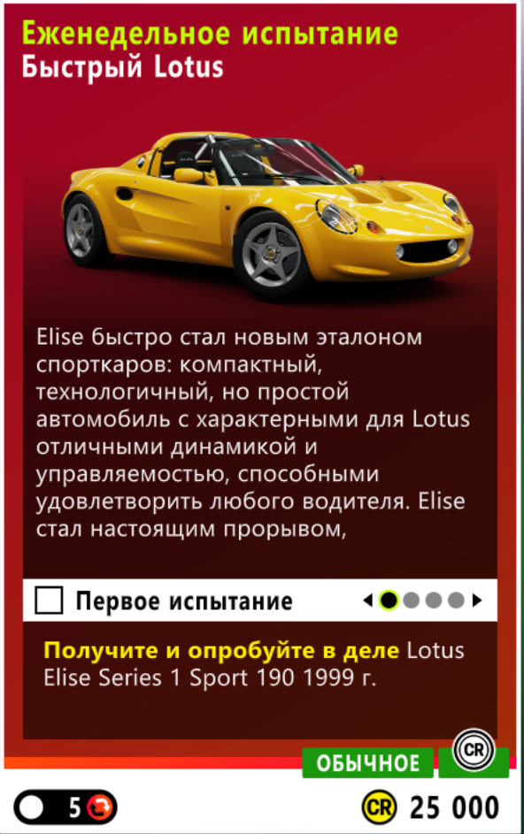

weekly5 очков
01Fast and Lotus
Условие: На 1999 Lotus Elise Series 1 Sport 190: 6 звёзд на Speed Traps, 4 Speed Skills и 3 круга на Shimanoyama Drift Attack. Награда: 25 000 CR.
Как выполнить: Выполняйте главы по порядку; для Speed Skills используйте безопасный участок трассы и доберите 4 навыка до перехода к Drift Attack.
Автомобиль и тюнинг: 1999 Lotus Elise Series 1 Sport 190 — share code: .
Решение: сообщество
Официальная Playlist · Информационная тема Autumn · Текущий тюнинг/гид · Локация Shirakawa-go